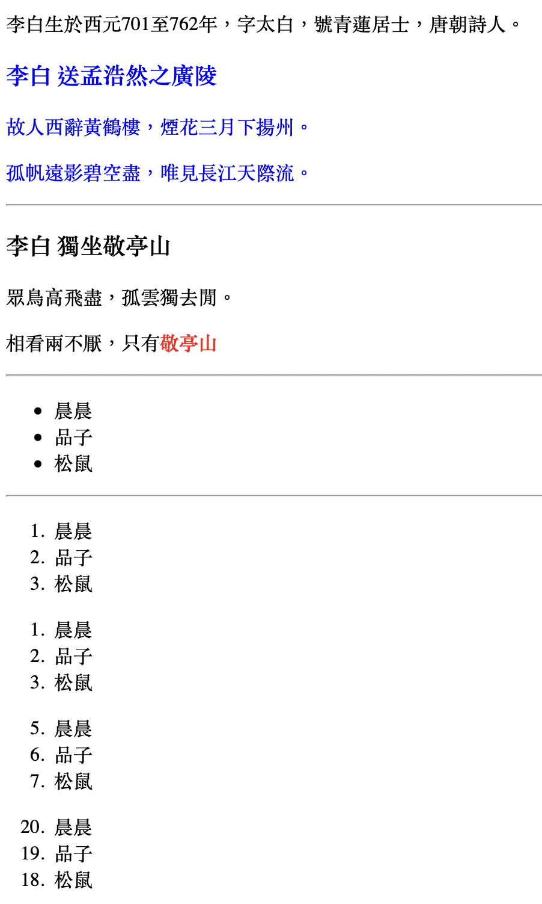

最近借了一本和網頁程式交易 有關的書，裡頭有用到許多技術，所以我想在這一篇文記錄下關於HTML5的筆記。
使用meta charset=”UTF-8”讓網頁支援繁體中文，不會出現亂碼。
div算是HTML5的容器(container)，本身沒任何的特殊意義，也不帶任何功能。不過包起來比較適合CSS和JavaScript去做調整。
- style可以直接將CSS的美化相關的指令放入
- class則是輸入一個ID，需要先另外創建一個CSS檔案，在裡面放入這個ID的設定，然後再引用到class裡面。
- 像是下面的div style=”color:#0000FF”和div class=”poem”是一樣意思
hr可以畫一條水平線
ul和ol都能當作列表，只不過ul是沒有數字的，然後ol有，而且也可以自訂從哪個數字開始，或甚至順序顛倒。
1
2
3
4
5
6
7
8
9
10
11
12
13
14
15
16
17
18
19
20
21
22
23
24
25
26
27
28
29
30
31
32
33
34
35
36
37
38
39
40
41
42
43
44
45
46
47
48
| <!DOCTYPE html>
<html>
<head>
<meta charset="UTF-8">
</head>
<body>
<p>李白生於西元701至762年，字太白，號青蓮居士，唐朝詩人。</p>
<div style="color:#0000FF">
<h3>李白 送孟浩然之廣陵</h3>
<p>故人西辭黃鶴樓，煙花三月下揚州。</p>
<p>孤帆遠影碧空盡，唯見長江天際流。</p>
</div>
<hr>
<h3>李白 獨坐敬亭山</h3>
<p>眾鳥高飛盡，孤雲獨去閒。</p>
<p>相看兩不厭，只有<span style="color:red;font-weight:bold">敬亭山</span></p>
<hr>
<ul>
<li>晨晨</li>
<li>品子</li>
<li>松鼠</li>
</ul>
<hr>
<ol>
<li>晨晨</li>
<li>品子</li>
<li>松鼠</li>
</ol>
<ol start="a">
<li>晨晨</li>
<li>品子</li>
<li>松鼠</li>
</ol>
<ol start="5">
<li>晨晨</li>
<li>品子</li>
<li>松鼠</li>
</ol>
<ol start="20" reversed="">
<li>晨晨</li>
<li>品子</li>
<li>松鼠</li>
</ol>
</body>
</html>
|
1
2
3
| .poem{
color: #0000FF
}
|
結果：

1
2
3
4
5
6
7
8
9
10
11
12
13
14
15
16
17
18
19
20
21
22
23
24
25
26
27
28
29
30
31
32
33
34
35
36
37
38
39
40
41
42
43
44
45
46
47
48
49
50
51
52
53
54
55
56
57
58
59
60
61
62
63
64
65
66
67
68
69
70
| <!DOCTYPE html>
<html>
<head>
<style>
table {
font-family: arial, sans-serif;
border-collapse: collapse;
width: 100%;
}
td, th {
border: 1px solid #dddddd;
text-align: left;
padding: 8px;
}
tr:nth-child(even) {
background-color: #F5F5DC;
}
</style>
</head>
<body>
<div style="color:#00008B">
<h3>TIOBE Index for March 2017</h3>
</div>
<table style="width:100%" >
<tr>
<th>2017 March</th>
<th>2016 March</th>
<th>Rating</th>
</tr>
<tr>
<td>1</td>
<td>1</td>
<td>Java</td>
</tr>
<tr>
<td>2</td>
<td>2</td>
<td>C</td>
</tr>
<tr>
<td>3</td>
<td>3</td>
<td>C++</td>
</tr>
<tr>
<td>4</td>
<td>4</td>
<td>C#</td>
</tr>
<tr>
<td>5</td>
<td>5</td>
<td>Python</td>
</tr>
<tr>
<td>8</td>
<td>8</td>
<td>JavaScript</td>
</tr>
<tr>
<td>17</td>
<td>48</td>
<td>Go</td>
</tr>
</table>
</div>
</body>
</html>
|
2 16